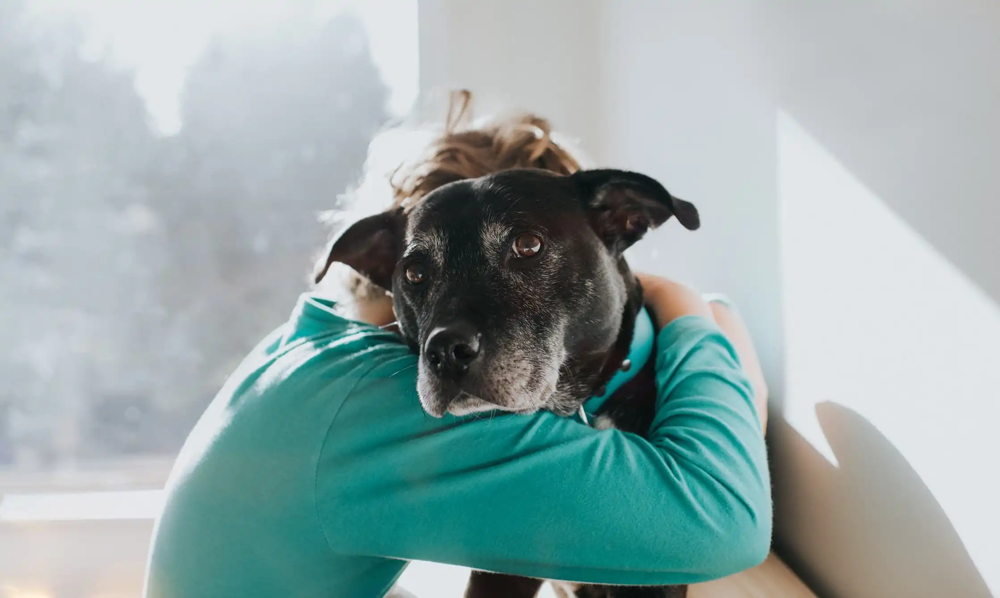

ONG Aumigão
ONG Aumigão
Quem Somos
Somos uma organizão que atua na criação de projetos para salvar animais abandonados.
Missão da ONG Aumigão
Promover dignidade e oportunidade de acolhimento aos animais abandonados
Contato
Endereço: Rua Terrier, 13 - Vila Canina - Sorocaba/SP
Telefone: (15) 99999-9999
Email: contato@ongaumigao.org.br